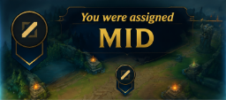

El mid laner tiene impacto rápido sobre ambos lados del mapa gracias a su posición central. Puede rotar fácilmente para ayudar en peleas, invadir junto al jungla o apoyar objetivos. Normalmente aporta burst, control o utilidad en teamfights.
Mid Lane
Farming
El farming en midlane requiere consistencia y velocidad debido a que es una línea corta y muy activa. El mid laner debe mantener buen CS mientras administra maná, prioridad y presión sobre el rival. Perder oleadas en mid afecta mucho la capacidad de rotar y apoyar al equipo en jugadas importantes.
Control de oleadas
El control de oleadas en mid define gran parte del macro temprano. Empujar rápido permite rotar primero hacia side lanes o ayudar al jungla, mientras que mantener la oleada equilibrada puede evitar castigos enemigos. Saber cuándo pushear o congelar determina la libertad de movimiento en el mapa.
Rotaciones y objetivos
El mid tiene un rol clave en la preparación de objetivos porque suele ser quien aporta prioridad central al mapa. Tener control de la línea de medio facilita el acceso a dragones, Heraldos y visión profunda. Además, muchas composiciones dependen del mid para aportar daño o utilidad decisiva en peleas de objetivos.
Impacto en el mapa
El impacto del midlane viene de su capacidad para moverse rápidamente a cualquier sector. Un buen mid presiona su línea y luego rota para crear superioridad numérica en dragones, dives o peleas pequeñas. Debido a su posición central, suele ser uno de los roles más importantes para acelerar el ritmo de partida.